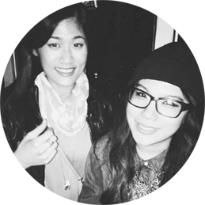

from political science
I graduated from the University of Washington with a B.A. in Political Science. While I was still in the program, my goal was to join the foreign service or the United Nations to change the world. That didn't happen...quite yet.
Growing up, my dad has always reinforced the importance of remaining openminded which propelled me to find a passion in a wide array of things. It also fueled my desire to experiment with a wide array of things.
to graphic design
My experiences in graphic design were self-motivated. It was back in the 2000s when graphic challenges used to be a huge deal. I taught myself the necessary skills to design some great stuff and eventually lended my skills to mainly student organizations. Before college, I have always wanted to become a graphic designer or simply an artist (whatever they means, really). To be honest, my journey has just begun.
I have recently completed the part-time UX Design course at General Assembly, an 8-week course that teaches me the basic and necessary skills about UX design. I also work as a full-time Shift Supervisor at Starbucks, delivering the best possible customer service. I am currently the Director of Design for the University of British Columbia Model United Nations 2016.
coffee and beer
When I'm not working, I enjoy coffee, beer and a good book. A good Porter always brightens up the day. I spend too much time on Spotify or Pitchfork discovering new music, I promise myself that one day, I'd continue my dad's legacy to complete a cross-country road trip on my own. My goal is to shake Dan Auerbach's hand and tell him how much I love The Black Keys. (Y)

contact
current project:

↑ See more at my portfolio, see above.